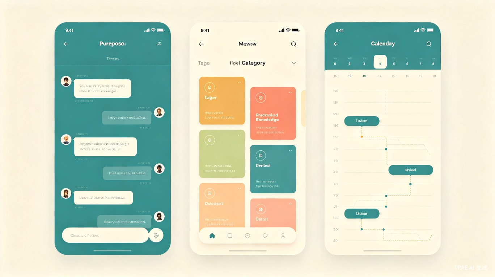

1创意名称 + 创意介绍
想解决什么问题
很多人习惯打开微信，给自己或"文件传输助手"发消息来随手记东西——这种方式虽然快、符合直觉，但信息散落在聊天记录里，无法有效整理、检索和管理，还存在隐私泄露和数据丢失的风险。
为什么会想到做这个
聊天是我们最自然的信息输入方式——打开就能说，不需要思考"该记在哪个文件夹"。但随着 AI 能力的发展，我们发现如果把"对话流"的交互方式和 AI 的理解能力结合起来，不仅能让记录更高效，还能在你"打开软件就忘了要记什么"的时候，由 AI 主动引导你完成记录。于是我们决定做一款看起来像聊天软件、但实际上是强大笔记工具的 App。
大概是什么产品
一款基于 Expo 的跨平台（Android / iOS / 鸿蒙）手机端应用，以聊天式交互为入口，结合 AI 自动分析、分类和回复，提供多视角的笔记管理能力。
2目标用户及痛点
面向哪些用户
信息工作者
产品经理、运营、记者、研究者等日常需要大量碎片信息记录的人
微信自说自话型用户
喜欢用微信"发给自己"记东西的普通用户，希望有更好的替代方案
效率工具追求者
对现有笔记 App 的复杂结构感到疲惫、希望降低记录门槛的人
在什么场景下使用
- ✓灵感一闪时 — 打开 App 直接"说"出来，和跟朋友聊天一样自然
- ✓会议/阅读/刷社交媒体时 — 看到有价值的内容，随手发给自己
- ✓日常碎片 — 待办、购物清单、碎片想法，所有"不记下来就会忘"的瞬间
- ✓回顾整理时 — 用不同视角（时间线、标签、主题分类）浏览过去的记录
当前痛点
❌ 用微信发给自己
- 信息被聊天记录淹没
- 无法分类，搜索低效
- 换手机或清记录就会丢失
- 隐私风险高
✅ 用 Saltnote
- AI 自动归类整理
- 多维度检索，秒级定位
- 云端同步，数据安全
- 本地加密，隐私可控
3价值与意义
效率提升
Saltnote 将"产生想法 → 记录下来"的路径从传统的：
解锁手机 → 找到笔记 App → 新建笔记 → 想标题 → 写内容
缩短为：
打开 → 说话
把记录门槛降到和聊天一样低。同时 AI 在后台自动对内容进行归类、摘要、关联，让用户不需要手动整理，真正做到"随手丢进去，想要的时候找得到"。
商业价值
笔记工具是一个高频刚需赛道，但现有产品大多在"结构化"方向竞争，反而忽略了最大量的碎片信息输入场景。Saltnote 以"聊着聊着就把笔记记好了"的差异化体验切入，瞄准的是 Notion、印象笔记等产品覆盖不到的"轻记录"市场，具备从工具型产品成长为个人知识管理平台的潜力。

4产品核心亮点
AI 智能助手
自动分析内容语义，智能分类归档，主动提醒回顾，让 AI 成为你的第二大脑
聊天式交互
零学习成本，打开即聊，支持文字、语音、图片多种输入方式
多维度检索
时间线、标签云、主题聚类、全文搜索，多种方式快速定位信息
隐私优先
本地加密存储，端到端同步，你的数据只属于你
跨平台覆盖
基于 Expo 开发，一套代码覆盖 Android、iOS、鸿蒙三大平台
离线优先
无网络也能记录，自动同步，随时随地捕捉灵感
5技术实现方案
技术栈
前端框架
Expo + React Native
AI 能力
大语言模型 API（语义分析/分类/摘要）
数据存储
SQLite（本地）+ 云端同步
部署平台
Android / iOS / 鸿蒙
开发计划
- ✓Phase 1 — 核心聊天交互 + 本地存储 + 基础笔记管理
- ✓Phase 2 — AI 语义分析 + 自动分类 + 智能摘要
- ✓Phase 3 — 多视角浏览 + 搜索 + 数据同步
- ✓Phase 4 — 跨平台适配 + 性能优化 + 用户反馈迭代